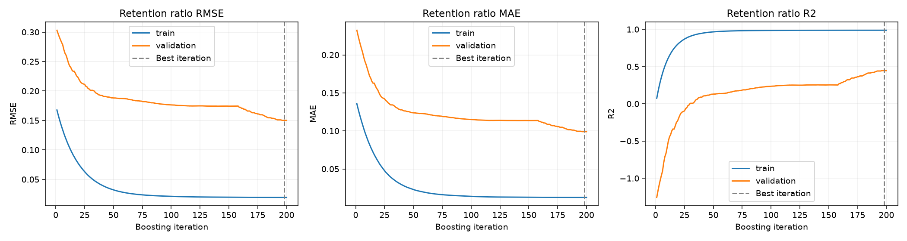

Independent NumPy/Pandas implementation. Ordered-prefix mode uses dyadic supporting models and shared tree structures; it is an approximation, not full CatBoost parity. Training curves are resubstitution metrics using inference encodings, not unbiased generalization estimates. Leaf fitting uses ordered encodings. Validation/test use training-only category maps.
| mae | rmse | r2 | |
|---|---|---|---|
| retention_ratio | 0.0800 | 0.0988 | 0.8448 |
| price_myr | 290.3099 | 363.2742 | 0.8208 |
Boosting: ordered; permutations: 3; best iteration: 198

Lower MAE/RMSE is better; higher R² is better. Ratio metrics and MYR price metrics use different units. Synthetic results do not establish real-market accuracy.